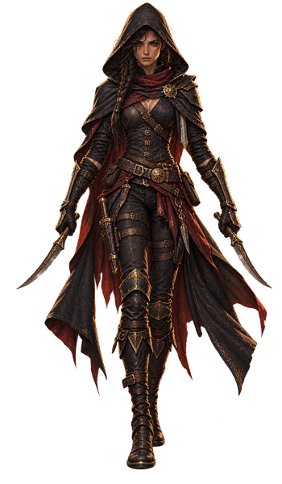

Rogue¶
A rogue doesn't overpower a fight, they end it early—one clean opening turns an ordinary hit into the only hit that mattered. That same eye for the gap shows up in a lock, a lie, a guard's blind spot. Jack of a dozen trades and better at leaving unseen, a rogue survives on a second way out already scouted.

- Hit die
- D8 per Rogue level
- Primary ability
- Dexterity
- Saving throws
- Dexterity, Intelligence
- Armor training
- Light armor
- Weapons
- Simple weapons and Martial weapons that have the Finesse or Light property
- Tools
- Thieves’ Tools
- Starting equipment
- Choose A or B: (A) Leather Armor, 2 Daggers, Shortsword, Shortbow, 20 Arrows, Quiver, Thieves’ Tools, Burglar’s Pack, and 8 GP; or (B) 100 GP
| Level | Proficiency Bonus |
Class Features |
Sneak Attack |
Skill Points | ||
|---|---|---|---|---|---|---|
| Free Points |
Bound Skills |
Bound Tools |
||||
| 1 | +2 | Expertise, Sneak Attack, Thieves’ Cant, Weapon Mastery | 1d6 | 14 | 6 | 1 |
| 2 | +2 | Cunning Action, Sneak Critical FH | 1d6 | 14 | 6 | 1 |
| 3 | +2 | Rogue Subclass, Steady Aim | 2d6 | 14 | 6 | 1 |
| 4 | +2 | Ability Score Improvement | 2d6 | 16 | 6 | 1 |
| 5 | +3 | Cunning Strike, Uncanny Dodge | 3d6 | 16 | 6 | 1 |
| 6 | +3 | Expertise | 3d6 | 16 | 6 | 1 |
| 7 | +3 | Evasion, Reliable Talent | 4d6 | 16 | 6 | 1 |
| 8 | +3 | Ability Score Improvement | 4d6 | 18 | 6 | 1 |
| 9 | +4 | Subclass feature | 5d6 | 18 | 6 | 1 |
| 10 | +4 | Ability Score Improvement | 5d6 | 18 | 6 | 1 |
| 11 | +4 | Improved Cunning Strike | 6d6 | 18 | 6 | 1 |
| 12 | +4 | Ability Score Improvement | 6d6 | 20 | 6 | 1 |
| 13 | +5 | Subclass feature | 7d6 | 20 | 6 | 1 |
| 14 | +5 | Devious Strikes | 7d6 | 20 | 6 | 1 |
| 15 | +5 | Slippery Mind | 8d6 | 20 | 6 | 1 |
| 16 | +5 | Ability Score Improvement | 8d6 | 22 | 6 | 1 |
| 17 | +6 | Subclass feature | 9d6 | 22 | 6 | 1 |
| 18 | +6 | Elusive | 9d6 | 22 | 6 | 1 |
| 19 | +6 | Epic Boon | 10d6 | 22 | 6 | 1 |
| 20 | +6 | Stroke of Luck | 10d6 | 24 | 6 | 1 |
The last three columns are Fate's Hand. They show your running total at that level, not the gain — you keep every step you passed through.
Level 1: Expertise
You gain Expertise in two of your skill proficiencies of your choice. Sleight of Hand and Stealth are recommended if you have proficiency in them.
At Rogue level 6, you gain Expertise in two more of your skill proficiencies of your choice.
Level 1: Sneak Attack
You know how to strike subtly and exploit a foe’s distraction. Once per turn, you can deal an extra 1d6 damage to one creature you hit with an attack roll if you have Advantage on the roll and the attack uses a Finesse or a Ranged weapon. The extra damage’s type is the same as the weapon’s type.
You don’t need Advantage on the attack roll if at least one of your allies is within 5 feet of the target, the ally doesn’t have the Incapacitated condition, and you don’t have Disadvantage on the attack roll.
The extra damage increases as you gain Rogue levels, as shown in the Sneak Attack column of the Rogue Features table.
Level 1: Thieves’ Cant
You picked up various languages in the communities where you plied your roguish talents. You know Thieves’ Cant and one other language of your choice, which you choose from the language tables in “Character Creation.”
Level 1: Weapon Mastery
Your training with weapons allows you to use the mastery properties of two kinds of weapons of your choice with which you have proficiency, such as Daggers and Shortbows.
Whenever you finish a Long Rest, you can change the kinds of weapons you chose. For example, you could switch to using the mastery properties of Scimitars and Shortswords.
Level 2: Sneak Critical FH
+1 critical range on your Sneak Attacks. It widens the critical range of the sneak attack itself, not of every attack you make.
Level 2: Cunning Action
Your quick thinking and agility allow you to move and act quickly. On your turn, you can take one of the following actions as a Bonus Action: Dash, Disengage, or Hide.
Level 3: Rogue Subclass
You gain a Rogue subclass of your choice. The Thief subclass is detailed after this class’s description. A subclass is a specialization that grants you features at certain Rogue levels. For the rest of your career, you gain each of your subclass’s features that are of your Rogue level or lower.
Level 3: Steady Aim
As a Bonus Action, you give yourself Advantage on your next attack roll on the current turn. You can use this feature only if you haven’t moved during this turn, and after you use it, your Speed is 0 until the end of the current turn.
Level 4: Ability Score Improvement
You gain the Ability Score Improvement feat (see “Feats”) or another feat of your choice for which you qualify. You gain this feature again at Rogue levels 8, 10, 12, and 16.
Level 5: Cunning Strike
You’ve developed cunning ways to use your Sneak Attack. When you deal Sneak Attack damage, you can add one of the following Cunning Strike effects. Each effect has a die cost, which is the number of Sneak Attack damage dice you must forgo to add the effect. You remove the die before rolling, and the effect occurs immediately after the attack’s damage is dealt. For example, if you add the Poison effect, remove 1d6 from the Sneak Attack’s damage before rolling.
If a Cunning Strike effect requires a saving throw, the DC equals 8 plus your Dexterity modifier and Proficiency Bonus.
Poison (Cost: 1d6). You add a toxin to your strike, forcing the target to make a Constitution saving throw. On a failed save, the target has the Poisoned condition for 1 minute. At the end of each of its turns, the Poisoned target repeats the save, ending the effect on itself on a success.
To use this effect, you must have a Poisoner’s Kit on your person.
Trip (Cost: 1d6). If the target is Large or smaller, it must succeed on a Dexterity saving throw or have the Prone condition.
Withdraw (Cost: 1d6). Immediately after the attack, you move up to half your Speed without provoking Opportunity Attacks.
Level 5: Uncanny Dodge
When an attacker that you can see hits you with an attack roll, you can take a Reaction to halve the attack’s damage against you (round down).
Level 7: Evasion
You can nimbly dodge out of the way of certain dangers. When you’re subjected to an effect that allows you to make a Dexterity saving throw to take only half damage, you instead take no damage if you succeed on the saving throw and only half damage if you fail. You can’t use this feature if you have the Incapacitated condition.
Level 7: Reliable Talent
Whenever you make an ability check that uses one of your skill or tool proficiencies, you can treat a d20 roll of 9 or lower as a 10.
Level 11: Improved Cunning Strike
You can use up to two Cunning Strike effects when you deal Sneak Attack damage, paying the die cost for each effect.
Level 14: Devious Strikes
You’ve practiced new ways to use your Sneak Attack deviously. The following effects are now among your Cunning Strike options.
Daze (Cost: 2d6). The target must succeed on a Constitution saving throw, or on its next turn, it can do only one of the following: move or take an action or a Bonus Action.
Knock Out (Cost: 6d6). The target must succeed on a Constitution saving throw, or it has the Unconscious condition for 1 minute or until it takes any damage. The Unconscious target repeats the save at the end of each of its turns, ending the effect on itself on a success.
Obscure (Cost: 3d6). The target must succeed on a Dexterity saving throw, or it has the Blinded condition until the end of its next turn.
Level 15: Slippery Mind
Your cunning mind is exceptionally difficult to control. You gain proficiency in Wisdom and Charisma saving throws.
Level 18: Elusive
You’re so evasive that attackers rarely gain the upper hand against you. No attack roll can have Advantage against you unless you have the Incapacitated condition.
Level 19: Epic Boon
You gain an Epic Boon feat (see “Feats”) or another feat of your choice for which you qualify. Boon of the Night Spirit is recommended.
Level 20: Stroke of Luck
You have a marvelous knack for succeeding when you need to. If you fail a D20 Test, you can turn the roll into a 20.
Once you use this feature, you can’t use it again until you finish a Short or Long Rest.
Rogue subclass: Thief
Hunt for Treasure as a Classic Adventurer
A mix of burglar, treasure hunter, and explorer, you are the epitome of an adventurer. In addition to improving your agility and stealth, you gain abilities useful for delving into ruins and getting maximum benefit from the magic items you find there.
Level 3: Fast Hands
As a Bonus Action, you can do one of the following.
Sleight of Hand. Make a Dexterity (Sleight of Hand) check to pick a lock or disarm a trap with Thieves’ Tools or to pick a pocket.
Use an Object. Take the Utilize action, or take the Magic action to use a magic item that requires that action.
Level 3: Second-Story Work
You’ve trained to get into especially hard-to-reach places, granting you these benefits.
Climber. You gain a Climb Speed equal to your Speed.
Jumper. You can determine your jump distance using your Dexterity rather than your Strength.
Level 9: Supreme Sneak
You gain the following Cunning Strike option.
Stealth Attack (Cost: 1d6). If you have the Hide action’s Invisible condition, this attack doesn’t end that condition on you if you end the turn behind Three-Quarters Cover or Total Cover.
Level 13: Use Magic Device
You’ve learned how to maximize use of magic items, granting you the following benefits.
Attunement. You can attune to up to four magic items at once.
Charges. Whenever you use a magic item property that expends charges, roll 1d6. On a roll of 6, you use the property without expending the charges.
Scrolls. You can use any Spell Scroll, using Intelligence as your spellcasting ability for the spell. If the spell is a cantrip or a level 1 spell, you can cast it reliably. If the scroll contains a higher-level spell, you must first succeed on an Intelligence (Arcana) check (DC 10 plus the spell’s level). On a successful check, you cast the spell from the scroll. On a failed check, the scroll disintegrates.
Level 17: Thief’s Reflexes
You are adept at laying ambushes and quickly escaping danger. You can take two turns during the first round of any combat. You take your first turn at your normal Initiative and your second turn at your Initiative minus 10.
Sorcerer
What Fate's Hand changes
| Bound skill | Bound tool | Free point pool | Expertise access |
|---|---|---|---|
| 6 | 1 | 14 | lvl 1 |
Your class list FH — Acrobatics · Athletics · Deception · Insight · Intimidation · Investigation · Delve · Vigilance · Survival · Persuasion · Sleight of Hand · Stealth.
Expertise (level 1) FH — no free points. Your expertise is already paid for, inside your six bound points; what the feature hands you is the permission, from level 1. Six is the first bound budget large enough to buy an Expert and still have something left, which is why the Rogue is the only class whose printed layout reaches past Novice. (The layouts are in Skills & Tools — Player Guide.)
One subclass more than the base game FH — beside the roguish archetypes printed above, Fate's Hand adds the Silent Blade: the rogue who ends it in the first round, with a wire in one hand and a dagger in the other. Like the College of Banners it has an entry price — Adept in Stealth and Adept in Hunting — and it is the only subclass that hands you a training, the Garrot, for free.
This work includes material from the System Reference Document 5.2.1 (“SRD 5.2.1”) by Wizards of the Coast LLC, available at https://www.dndbeyond.com/srd. The SRD 5.2.1 is licensed under the Creative Commons Attribution 4.0 International License, available at https://creativecommons.org/licenses/by/4.0/legalcode.